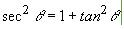

.

Descripción:
- Desarrolla, en conjunto con el
profesor, algunos problemas que implican el uso de funciones.

Objetivos:
- Aplicar los conocimientos
sobre funciones.
- Reconocer la importancia del
uso de funciones para el diseño de un programa.

Modalidad:

Instrucciones:
- Implementa las siguientes funciones, recuerda
que las funciones se definen antes de la función del main y del
script principal.
-
La función
main
()
debe mandar llamar a la función que imprima el menú
correspondiente y de acuerdo a la opción seleccionada por el
usuario le dé la oportunidad de ejecutar cualquiera de las
funciones que han sido construidas. Utiliza el estatuto de control
if. Recuerda que la captura de datos debe ser
realizada en la sección del main. Valida opciones incorrectas.
-
En el
script principal manda
llamar a la función main.


Ejercicios:
- La función
kilometrosMillas(km) que convierta
la cantidad dada en kilómetros a millas. Equivalencia
1 milla = 1.6 km.
- La función
millasKilometros(millas) que
convierta la cantidad dada en millas a kilómetros.
- La
función unidadesLongitud()
que despliegue el siguiente menú en pantalla:
.
2. Millas - Kilometros
3. Salir
La función
main()
que utilice la función unidadesLongitud y de
acuerdo a la opción seleccionada por el usuario utilice la función
apropiada de las implementadas anteriormente, para calcular las
equivalencias de las unidades de longitud. Utiliza el estatuto de
control
if. Recuerda que la captura de datos debe ser
realizada en la sección del main. Valida opciones incorrectas.
En el
script principal manda
llamar a la función main.
Guarda tu archivo como:
D_Matricula.py.
- La
función gradosRadianes(grados)
que recibe una cantidad en grados y regresa su equivalencia en
radianes.
.

- La
función secanteCuadrada(grados)
que recibe un ángulo en grados y regresa la secante cuadrada de
dicho ángulo.

Utiliza la
función math.tan(x) de la librería math, que calcula
la tangente del ángulo x especificado en radianes, por lo tanto,
para poder usar esta función, es necesario primero transformar el
ángulo en grados a radianes, para ello utiliza la función
gradosRadianes implementada anteriormente. Como puedes ver, es
posible utilizar una función dentro de otra función. La única
condición que demanda el compilador, es que la función a utilizar
dentro, haya sido definida anteriormente.
- La
función cotangente(grados)
que recibe un ángulo en grados y regresa la cotangente de dicho
ángulo.
..

Utiliza la función math.tan(x) de la librería math,
que calcula la tangente del ángulo x especificado en radianes, por
lo tanto para poder usar esta función, es necesario primero
transformar el ángulo en grados a radianes como en la función
anterior.
- La
función identidades()
que despliegue el siguiente menú en pantalla:
1. Secante
2. Cotangente
3. Salir
-
La función
main()
que utilice la función identidades y de
acuerdo a la opción seleccionada por el usuario utilice la función
apropiada de las implementadas anteriormente, para calcular la
identidad trigonométrica elegida. Utiliza el estatuto de control
if. Recuerda que la captura de datos debe ser
realizada en la sección del main. Valida opciones incorrectas.
-
En el
script principal manda
llamar a la función main.
-
Guarda tu archivo como:
D_Matricula.py.
-
La función
raizCuadrada(numero)
que recibe un número, calcule su raíz cuadrada e imprima el
resultado en pantalla.
La función
raizCuadrada2(numero)
que recibe un número, calcule su raíz cuadrada y
regrese
el resultado en una variable.
La función
mayor(a,
b, c)
que recibe como entradas tres números y regrese el mayor de
ellos.
La función
menu()
que despliegue el siguiente menú en pantalla:
1. Raiz cuadrada
2. Raiz cuadrada 2
3. Mayor
4. Salir
-
La función
main()
que utilice la función menu y de acuerdo a la
opción seleccionada por el usuario utilice la función apropiada de
las implementadas anteriormente, para calcular la operación
elegida. Utiliza el estatuto de control
if. Recuerda que la captura de datos debe ser
realizada en la sección del main. Valida opciones incorrectas.
-
En el
script principal manda
llamar a la función main.
-
Guarda tu archivo como:
D_Matricula.py.
- La función
millasKilometros(millas) que
convierta la cantidad dada en millas a kilómetros y regrese
el resultado en una variable.
1 milla equivale a 1.60934
kilómetros.
- La función
librasKilos(libras)
que convierta la cantidad
dada en libras a kilos y regrese el resultado en una variable.
1kilo equivale a 2.20462 libras.
- La función
goingToMexico(millas, libras)
que reciba millas y libras y haga uso de los funciones
anteriores para devolver kilometros y kilos.
- La función
unidades()
que despliegue el siguiente menú en pantalla:
1. Millas - Kilometros
2. Libras - Kilos
3. Going to Mexico
4. Salir
La función
main()
que utilice la función unidades y de acuerdo a la
opción seleccionada por el usuario utilice la función apropiada de
las implementadas anteriormente, para calcular la operación
elegida. Utiliza el estatuto de control
if.
Recuerda que la captura de datos debe ser realizada en la sección
del main. Valida opciones incorrectas.
En el
script principal
manda llamar a la función main.
Guarda tu archivo como:
D_Matricula.py.
- La función
kilogramosLibras(kg) que convierta
la cantidad dada en kilogramos a libras. Equivalencia
1 kg = 2.2 lb.
- La función
librasKilogramos(lb) que convierta
la cantidad dada en libras a kilogramos.
- La
función unidadesPeso()
que despliegue el siguiente menú en pantalla:
.
-
La función
main()
que utilice la función unidadesPeso para desplegar
el menú correspondiente y de acuerdo a la opción seleccionada por
el usuario le dé la oportunidad de ejecutar cualquiera de las
funciones que han sido construidas. Utiliza el estatuto de control
if.
Recuerda que la captura de datos debe ser realizada en la sección
del main. Valida opciones incorrectas.
-
En el
script principal
manda llamar a la función main.
-
Guarda tu archivo como:
D_Matricula.py.
- La función
gramosOnzas(gramos) que convierta
la cantidad dada en gramos a onzas. Equivalencia
1 onza = 28.35 gramos.
- La función
onzasGramos(onzas) que convierta
la cantidad dada en onzas a gramos.
- La
función unidadesPeso()
que despliegue el siguiente menú en pantalla:
.
-
La función
main()
que utilice la función unidadesPeso para desplegar
el menú correspondiente y de acuerdo a la opción seleccionada por
el usuario utilice la función apropiada de las implementadas
anteriormente, para calcular las equivalencias de las unidades de
peso. Utiliza el estatuto de control
if.
Recuerda que la captura de datos debe ser realizada en la sección
del main. Valida opciones incorrectas.
-
En el
script principal manda
llamar a la función main.
-
Guarda tu archivo como:
D_Matricula.py.
- Escribe una función
que reciba como parámetro una cantidad de horas, minutos y
segundos y regrese como valor de retorno el tiempo equivalente
en segundos.
Por
ejemplo:
- Si la función recibe
los valores horas = 2, minutos = 20
y segundos = 8, regresará el valor
8408.
-
Ahora escribe un
programa en el que se pida el tiempo en horas, minutos y
segundos han tardado 2 procesos y luego
muestre cuanto tiempo en segundos ha tardado cada proceso.
- Guarda tu archivo como:
D_Matricula.py
- En una tienda de
sillas para oficina se venden de 3 tipos: básica, estándar y de
lujo. Además existen los clientes normales y los clientes
frecuentes.
- El precio de las sillas
es:
- Básica $700.00 c/u
- Estándar $900.00 c/u
- De Lujo $1,500.00
c/u
- El dueño de la tienda ha
decidido dar un descuento del 20% a los clientes frecuentes.
- Además ha decidido
aplicar la siguiente política de descuentos por mayoreo a los
clientes normales:
- si su compra es
>= $10,000 y < $20,000 un 10%
de descuento
- si su compra es
>= $20,000 un 15% de
descuento
- Escribe un programa que
pregunte el tipo de silla, el tipo de cliente y la cantidad a
comprar (supón que solo se va a comprar de un tipo de silla) y
calcule y muestre:
- el precio antes de
aplicar descuento,
- la cantidad de
dinero que se otorga por descuento y
- el total a pagar por
el cliente.
Usa funciones para resolver tu programa.
Entrada
- Una letra mayúscula que representa el tipo de silla
- Una letra mayúscula que representa el tipo de cliente
- Un número entero que indica la cantidad de sillas a comprar.
Salida
- El precio antes de descuento
- El descuento
- El total a pagar por el cliente
Ejemplo 1:
>>>E
>>>F
>>>5
4500
900.0
3600.0
Ejemplo 2:
>>>L
>>>N
>>>10
15000
1500.0
13500.0
-
Guarda tu archivo como:
D_Matricula.py.

Recursos:
6. Funciones

Especificaciones
de entrega:
|